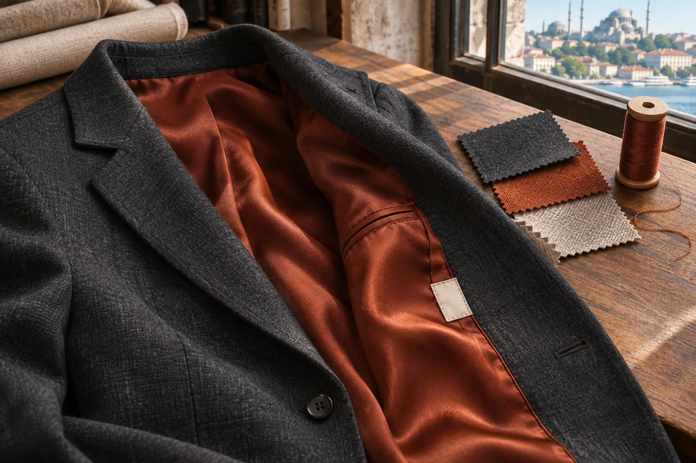

A retailer orders a charcoal jacket from an Istanbul garment maker. The approved swatch is a wool blend, the lining feels like silk and the sales team has already called the style a wool jacket on the website. The bulk delivery arrives with one percentage line on the inside label. Before releasing the cartons, a buyer needs to answer three questions. Which part of the jacket does that line describe? What evidence identifies the lining? Can someone shopping online see the correct composition before paying?
Read the garment from the outside in
EU Regulation 1007/2011 governs textile fibre names and composition information. For a jacket with different textile components, Article 11 generally requires a statement for each component with a different fibre composition. A limited exception concerns components below thirty per cent of the product's total weight which are not main linings. Both conditions matter. A lightweight main lining still needs its own composition statement when it differs from the shell. The Commission's textile labelling FAQs discuss this distinction and give examples.
Consider a shell made of seventy per cent wool and thirty per cent polyester, with a main lining made entirely of viscose. A clear English specimen would read “Shell 70% wool, 30% polyester” and “Main lining 100% viscose.” Those figures describe the fibres within each named component. Pooling everything on a scale and declaring an average across the garment would conceal the composition of the surfaces the customer touches. Keep the confirmed formulation beside the approved artwork so a percentage cannot migrate from one row to another during translation.
Begin with a finished production sample. Open the front, turn a sleeve, inspect the pockets and look under detachable parts. Mark each distinct construction on a simple drawing and identify the main lining by its function. Get the factory's bill of materials, including codes for the outer cloth, sleeve fabric, pocket bags, interlining and trims. If a supplier claims that an item can be disregarded, ask which provision or annex supports that treatment and what facts satisfy it. A factory nickname such as “facing” may describe different pieces on different patterns.
Turn a mill description into legal fibre names
Article 5 and Annex I establish the fibre vocabulary. “Satin” describes a weave and “jersey” a construction. Neither tells a shopper which fibres make up the material. A silky appearance can come from viscose, polyester or silk, among other possibilities. Ask the mill to identify the fibre against its numbered material specification. If the response simply repeats the trade name, send back the exact row that needs clarification. Keep the original supplier terminology alongside the accepted translation for future orders.
For blends, Article 9 generally calls for names and percentages by weight in descending order. Examine each component independently. Suppose a trouser shell contains cotton, polyester and elastane. Marketing wants to describe it as stretch cotton. That phrase can convey a wearing characteristic, but the composition field still needs the appropriate names and figures. A buyer who receives an unexplained difference between two certificates should find out whether they describe different lots, different components or different measurement methods before approving a label.
Treat absolute expressions carefully. Article 7 reserves descriptions such as pure and all for products consisting exclusively of one fibre, subject to narrow conditions for technically unavoidable extraneous fibres. An intentional elastane addition to improve recovery cannot simply disappear because the percentage looks small. Likewise, the special conditions for using “other fibres” deserve individual assessment. Establish why the particular fibres could not readily be identified during manufacture before relying on an exception. A missing email from the mill is a purchasing problem to resolve.
Check the patch, the badge and the button
A small leather patch on the waistband raises a question separate from the calculation of percentages. Article 12 requires the indication “Contains non-textile parts of animal origin” where applicable. An authentic leather badge on an otherwise cotton jacket is a practical example. Record its material, location and supplier. A shade named cognac, an embossed texture or a premium price tells the reviewer little about whether a patch is leather, coated fabric or a synthetic imitation.
A design team may replace horn buttons with plastic to meet a delivery date. Ask for the replacement specification, the date it reached the sewing line and the cartons affected. Check every other trim before removing the animal-origin statement. Some pieces may still contain a genuine leather zip pull. Obtain the correct wording for each destination language. Ensure buyers can distinguish this information from the shell composition, a voluntary origin statement or instructions explaining how to clean the garment.
Put a responsible business against each approval
Article 15 allocates responsibilities among manufacturers, importers and distributors. When the manufacturer is established outside the Union, the importer must ensure that the label or marking is supplied and that the information is accurate. A distributor can be treated as a manufacturer under the Regulation if it markets the garment under its own name or trademark, attaches the label itself or changes the label's content. A purchase order telling the Turkish factory to print labels should therefore identify who verifies the underlying information and who can authorise changes.
Map that responsibility for a private collection. A French brand commissions the pattern, an Istanbul workshop assembles it, a Bursa mill supplies the shell and a separate converter sources the lining. The workshop knows which roll went to the cutter. The converter holds the yarn specification. The retailer controls what appears in its catalogue. Give each participant a specific question with an answer that can be checked. A general assurance that the style complies leaves uncertainty about which person actually reviewed the final language.
Compare the garment, artwork and online listing
Under Articles 14 and 16 the presentation must meet requirements for durability, legibility, visibility and accessibility, and an attached label must be secure. Fibre information must be clear to buyers before purchase, including an electronic purchase. Use the official language or languages required in the Member State where the garment is offered to consumers, subject to any national provision allowing otherwise. Dispatch from a single European warehouse does not make its local language sufficient for every destination.
Review a rendered product page on a small phone. Choose a size and colour, expand the details and follow the route a real shopper takes from search result to basket. A composition statement hidden behind a broken accordion or attached exclusively to a downloadable seasonal catalogue may never reach the customer. Check the marketplace offer independently. Intermediaries sometimes truncate a second line, discard special characters or substitute a generic description inherited from the product family. Capture the actual offer and the version of the data delivered to that platform.
A navy colourway can have a different lining from the charcoal version because the original material ran out. If one screen switches photographs without changing composition, a correct listing for one variant becomes misleading for another. Give every combination of style, material revision and sales destination a stable identifier. Test switching colours after selecting a size. Also check discounted stock, marketplace bundles and an older page reachable through a saved bookmark. A correction at the flagship store may leave an independent reseller displaying yesterday's figures.
Decide what to do with a mixed delivery
Imagine four hundred jackets in twenty cartons. A receiving inspector opens carton thirteen and finds a label declaring polyester lining. The approved material sheet says viscose. Put the suspect stock on hold, photograph the sewn label and identify the affected packing run. Have the supplier link roll numbers to cutting tickets, work bundles and finished cartons. If that chain stops at the sewing room, do not assume cartons one through twelve contain the original lining. Widen the hold until the physical stock can be separated reliably.
Ask a laboratory a question it can answer. Specify the garment identifier, sample the shell and main lining separately and describe the disputed fibres. Request the analytical method, uncertainty where relevant, and an explanation of any limits on identification. Preserve a counterpart from the same lot. The lab's report on one swatch cannot establish what every cutter used over a three-week period. Compare the result with purchasing records, remaining roll ends and the factory's physical segregation practices before deciding the extent of a correction.
When the sewn labels are wrong, agree on an identifiable rework area, the approved replacement text and a method for checking every affected piece. Count issued labels against completed garments, damaged labels and unused stock. Inspect the seam after reattachment so that the label stays secure and the repair preserves the lining. If only the web description is wrong, record when each channel corrected it. For products already sold, assess the specific discrepancy, affected markets and appropriate customer or authority response with local advisers.
Give translators a proof they can sign
Print the multilingual layout at actual size on the intended tape. After stitching, fold the seam allowance back and check whether a percentage digit, accent or decimal separator disappears into the join. A compressed line that looks sharp on a designer's monitor can become unreadable on a narrow woven strip. Ask a native speaker to identify the outer and inner materials from the finished piece without seeing the brief. If the answer is ambiguous, revise the hierarchy and repeat the check before ordering thousands of replacements.
Keep wash symbols, size conversions, country of manufacture and promotional claims visually distinct. A wholesale purchaser reading a packing specification has different needs from a parent comparing two winter coats in a shop. For a bilingual market, check both language versions against the same approved figures. An updated spreadsheet can accidentally propagate a translation from the previous season while retaining today's percentages. Have the reviewer initial the dated proof and record the printer's artwork reference on the purchase instruction.
Build a release file that survives the next reorder
Keep a compact set of records together. Include the technical drawing, mill declaration, approved label by language, dated photo of a production unit, evidence of any testing and a capture of the retail offer. Link them to the order, shipment and stock identifiers used by the warehouse. An attractive showroom sample can remain a design reference while a separately controlled production specimen confirms the material actually cut. Agree with the supplier which specimen answers which question if the two later diverge.
For the next buying meeting, bring one problem garment and ask four colleagues to describe it independently. The merchandiser names the collection, the pattern maker identifies the panels, the customs broker asks about classification and the consumer wants to know what rests against the skin. These perspectives explain why a single unqualified “wool” entry in the product database fails. Create separate fields for the shell, main lining, approved claims and destination language. Limit editing rights to the people responsible for each decision.
Close the order only when a stranger to the project can pick a jacket off the rack and trace both lines of its composition label to a production record. If a substitute lining was used, the file should identify the affected colours, units and languages without relying on a buyer's memory. That discipline pays off on the next reorder. A team can reuse the approved wording confidently when the materials match and recognise exactly which approval must be reopened when they change.
Frequently asked questions
Can a lightweight main lining be left off the composition label?
A main lining with a different composition must be identified even when it accounts for less than thirty per cent of the total weight.
Will an accurate label inside the garment cover an online sale?
The online offer must also make the fibre composition clear to customers before purchase. Check the selected colour and destination language.